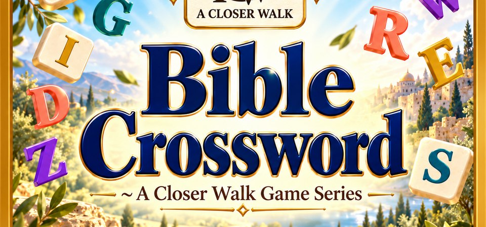
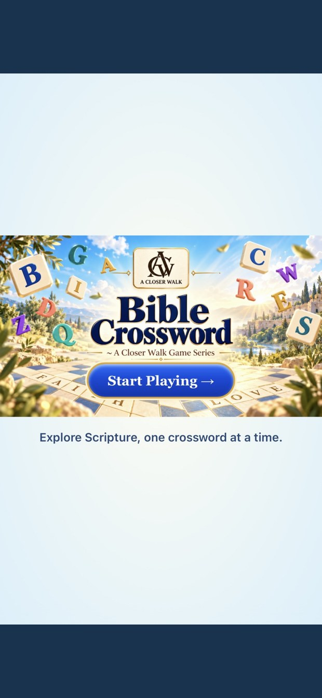
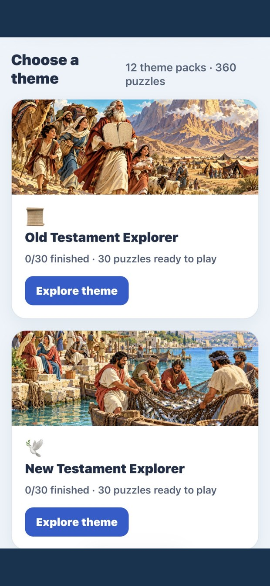
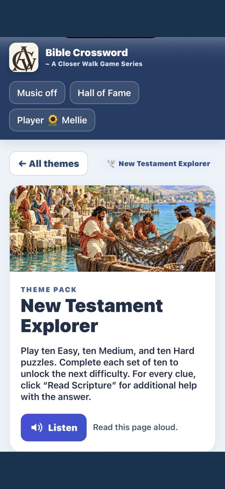
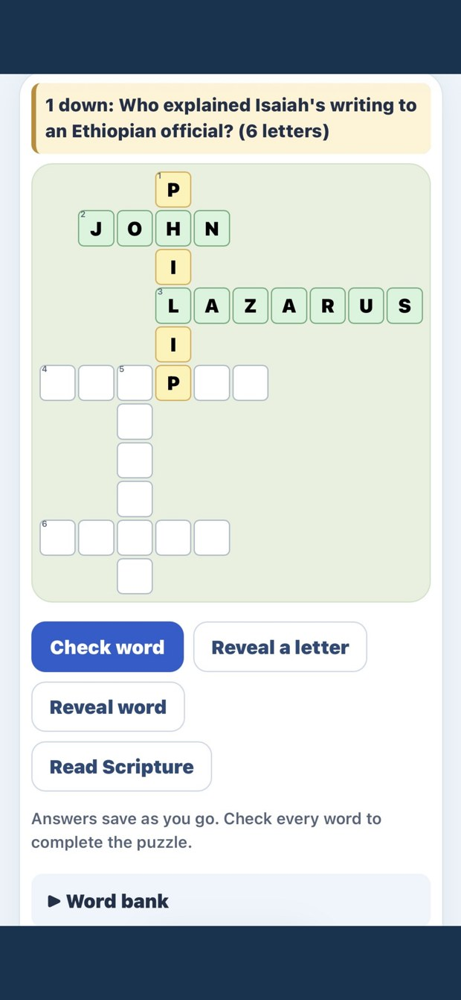
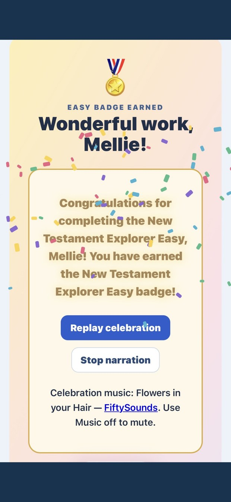
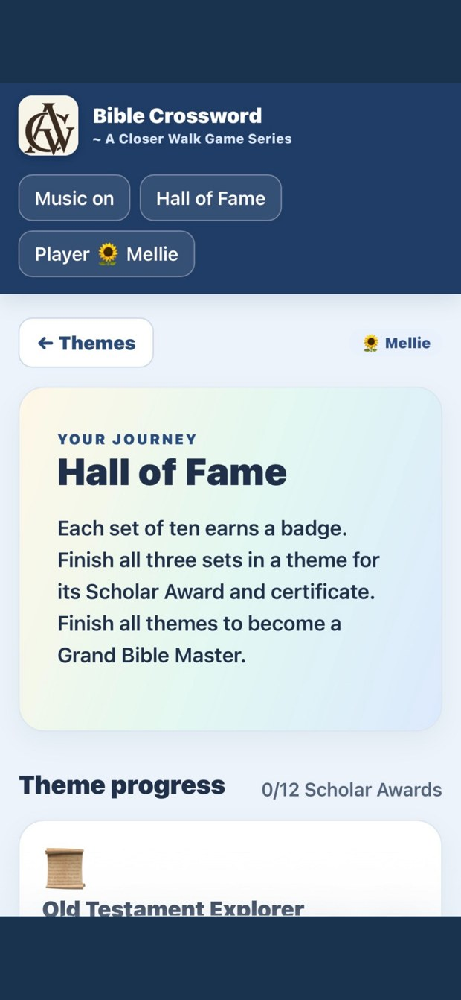

Find your favorite theme
Explore Genesis, the Life of Jesus, Women of the Bible, Parables, Revelation, and more across 12 themes.
A Closer Walk Game Series
Explore Bible people, places, and passages through crosswords that invite you to open Scripture with every clue.
For iPhone & iPad$4.99One-time purchase · No subscription

Explore Genesis, the Life of Jesus, Women of the Bible, Parables, Revelation, and more across 12 themes.
Complete ten puzzles each at Easy, Medium, and Hard. Each completed level unlocks the next difficulty within that theme.

Choose Read Scripture for help with each clue. Use unlimited hints and retries as you learn.
Listen to clue and Scripture narration, and use Enlarge Grid when you want a closer view of the puzzle.
Earn a badge for each difficulty, a Scholar Award for completing a theme, and Grand Bible Master for completing every theme.
Enjoy celebrations, revisit completed puzzles, and customize a certificate with design and color choices.






Discover the people, places, and promises of the Bible—one crossword at a time.
Read. Reflect. Solve. Grow.
Visit our support and privacy pages for more information.
Visit App Support →